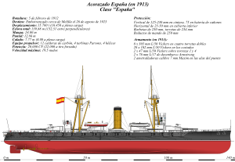

Acorazado
¿Qué es?
Un acorazado es un buque de guerra de gran tonelaje, fuertemente blindado y artillado con una batería principal compuesta por cañones de gran calibre. Los acorazados son más grandes y están mejor armados y blindados que los cruceros y los destructores.
Historia
Fueron los barcos de guerra más grandes de las flotas, representantes de la cúspide del poder naval de una nación, entre 1875 y la Segunda Guerra Mundial (1939-1945). Su finalidad era lograr la supremacía marítima, pero con la potenciación del poder aéreo y el desarrollo de misiles guiados sus grandes cañones dejaron de ser determinantes para la superioridad naval y los acorazados cayeron en desuso.
El diseño de los acorazados evolucionó para estar siempre en vanguardia con la incorporación y la adaptación de los avances tecnológicos. El término «acorazado» comenzó a usarse en la década de 1880 para definir un tipo de buque de guerra blindado con placas metálicas, los ironclad,1 que hoy son conocidos por los historiadores navales como acorazados pre-dreadnought. En 1906 la botadura del acorazado británico HMS Dreadnought inició una revolución en el diseño de este tipo de buques, y los acorazados inspirados por este barco comenzaron a llamarse dreadnoughts.
Los acorazados fueron un símbolo de dominio naval y de sentimiento nacional, y durante décadas también un factor importante tanto en la diplomacia como en la estrategia militar.2 A fines del siglo XIX y principios del XX tuvo lugar una carrera de armamento naval con la construcción de acorazados, exacerbada por la revolución del Dreadnought, que acabaría siendo una de las causas de la Primera Guerra Mundial. En el transcurso de este conflicto la batalla de Jutlandia supuso el mayor choque de flotas de batalla compuestas por acorazados. Los tratados navales de las décadas de 1920 y 1930 limitaron el número de acorazados pero no acabaron con la evolución en su diseño. Los poderes del Eje y los Aliados desplegaron tanto acorazados antiguos como de reciente construcción durante la Segunda Guerra Mundial.
La valía de los acorazados ha sido cuestionada, incluso en su período de apogeo.3 A pesar de los inmensos recursos empleados en la creación de acorazados y de su enorme potencia de fuego y blindaje, hubo muy pocos enfrentamientos entre ellos y demostraron ser cada vez más vulnerables a naves y armas más pequeñas y baratas: primero los torpedos y las minas marinas, y después los aviones y misiles guiados.4 La creciente distancia de los enfrentamientos navales llevó a que los portaaviones remplazaran a los acorazados como buques principales de combate durante la Segunda Guerra Mundial, y el último acorazado, el británico HMS Vanguard, fue botado en 1944. La armada de los Estados Unidos mantuvo en servicio varios acorazados durante la Guerra Fría para funciones de soporte artillero y los últimos de estos, el USS Wisconsin y el USS Missouri,5 fueron dados de baja en 1991 y 1992, respectivamente.67
 Acorazado
Acorazado
¿Por qué ya no se usan tanto?
Porque hoy ya no se necesitan dado que los grandes buques llevan misiles. Se ha radiador de servicio a los grandes acorazados porque se ha comprobado que en general son inútiles, frente a los aviones y misiles. El último gran buque fue el Yamato, japonés, y fue hundido por un ataque aéreo y no por otro buque.
Características
|  |
- Velocidad y autonomía:Se les estimó una velocidad máxima de 19,5 nudos, que es la que figura como oficial, aunque llegaron a dar en pruebas los 20 con 20.100 CV y 390 rpm. Con 11 270 cv y 328 rpm, la máxima era de 17,5 nudos y con 4680 CV y 223 rpms de 10,75 nudos. Esta era la velocidad económica, con un gasto de carbón de 81 t cada 24 horas. A velocidad máxima, el consumo de carbón era de 7,9 t por hora.
- Blindaje:La coraza estada formada por acero Krupp reforzado con una traca de planchas de 2,20 m de anchura, con el calado normal, 7,77 m, iba sumergida 140 cm.
- Armamento:Su armamento principal eran 8 cañones Vickers de 305 mm/50, situados en cuatro torres dobles, dos situados en la crujía (uno a popa y el otro a proa) y los otros dos más cerca del centro del buque, desplazados de la línea crujía. Se podían disparar los 8 cañones a la vez en salva, y 6 en misión de caza o retirada. Cada cañón pesaba 67,1 t y tenían un alcance máximo de 21 500 m. Las torres de artillería de estos acorazados tenían una dotación cada una de 34 artilleros y disparaban 5 tipos de proyectiles con un peso de 385,6 kg
|